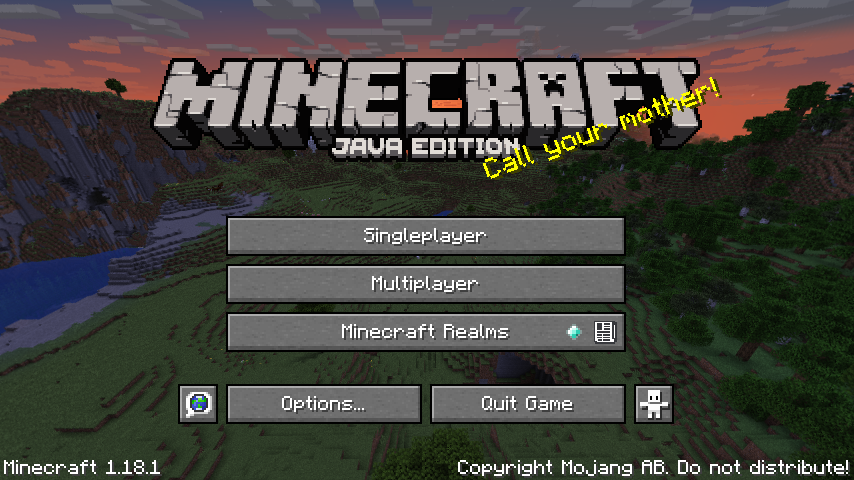

Minecraft is een sandbox-game gemaakt door Markus "Notch" Persson. Het werd later verder ontwikkeld door zijn bedrijf Mojang. Het spel werd uitgebracht in 2011.
Minecraft is een sandbox-game gemaakt door Markus "Notch" Persson. Het werd later verder ontwikkeld door zijn bedrijf Mojang. Het spel werd uitgebracht in 2011.
In dit spel kan men in een uitgestrekt gebied kubusvormige objecten plaatsen op een rooster. Het spel genereert automatisch een omgeving met grondstoffen, tegenstanders, dieren, grot- en tunnelsystemen, bergformaties en meren. De speler heeft een eigen avatar, waarmee hij de omgeving actief kan aanpassen.
Het spel kan op een server, met een LAN-verbinding of offline worden gespeeld voor €20,-. via de officiële website van Minecraft. De betaalde versie op de pc is inmiddels al meer dan 24 miljoen keer verkocht en is intussen over alle platformen meer dan 110 miljoen keer verkocht.
Minecraft is geschreven in Java en het werd aanvankelijk ontwikkeld door Markus Persson en tegenwoordig door het door hem opgerichte bedrijf, Mojang Studios. De officiële versie is in Nederland uitgekomen op 18 november 2011. Het werd gepresenteerd tijdens een conventie voor Minecraft-spelers, genaamd MineCon (2011).

Minecraft is een zogenaamde sandbox-game, waarbij de speler vrij rond kan lopen door een virtuele wereld, zonder een vooraf vastgesteld doel. Het belangrijkste kenmerk van het spel is het reizen door en ontdekken van grotten en kerkers en het bouwen van gebouwen en voorzieningen. De speler kan grondstoffen delven, deze tot andere voorwerpen verwerken en vechten tegen monsters (mobs).
Ook zijn er enkele speciale mogelijkheden, zoals het maken van automatische verbindingen door middel van redstone, en kunnen gereedschappen van een betovering (enchantment) worden voorzien. De betoveringen zijn door het spel bepaald, maar de mogelijkheden van redstone zijn bijna onbeperkt. Er kunnen bijvoorbeeld zeer complexe dingen, zoals echt werkende rekenmachines en robot-achtige constructies mee gemaakt worden.
Minecraft kent verschillende dimensies. De Nether, geïmplementeerd in de Alpha-versie op 30 oktober 2010, is de eerste extra dimensie die in Minecraft werd gemaakt. Later waren er plannen om een droomwereld toe te voegen, alhoewel dat uiteindelijk 'The End' is geworden.